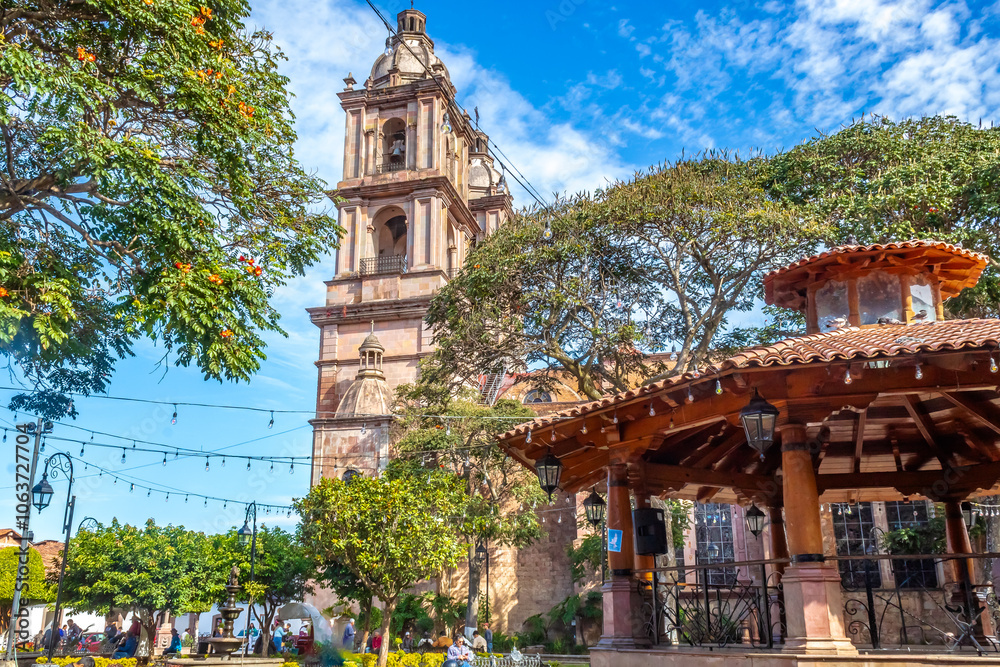

<!DOCTYPE html>
<html lang="es">
<html>
   
        <head>
    <TITLE>WEBSITE CECYMAGIC Alex_rz</TITLE>
    <link rel="icon" href="Logowebsite.jpeg" type="image/jpeg">
  </head>
</html>

<head>
    <meta charset="UTF-8">
    <meta name="viewport" content="width=device-width, initial-scale=1.0">
    <title>WEBSITE CECyMagic </title>
    <link href="https://cdn.jsdelivr.net/npm/bootstrap@5.3.3/dist/css/bootstrap.min.css" rel="stylesheet">

    <style>
    .card-img-top{
        height: 700px;
        object-fit: cover;
    }
     .card{
        height: 100%;
     }

   h1{
      color: rgb(99, 45, 25);
      font-family:cursive;
   }

    p{
      color: rgb(117, 9, 9);
      text-align:justify;
      font-family: Cambria, Cochin, Georgia, Times, 'Times New Roman', serif;
   }
   

    </style> 
</head>
 
<body>
        <div class="container text-center my-5">
        <h1> VICITA EL CENTRO DE VALLE</h1>
        <h4 style="color: rgba(21, 87, 18, 0.641);">¡
           Valle de Bravo !</h4>
        </div>

        <div class="container my-5">
        <div class="row g-4">

        <div class="col-md-6">
        <div class="card h-100 shadow">
          
           
        <div class="card-body text-center">
            <h5 class="card-title">
             VIDEO </h5>
            <a href="https://vt.tiktok.com/ZSpP6nGHE/">VER VIIDEO</a>


          <video controls>
            <source src="video2.mp4" type="video/mp4">
          </video>

         <h5 class="card-title">
            IGLESIA</h5>
            <p class="card-text">
                La Parroquia de San Francisco de Asís es el templo más emblemático de Valle de Bravo y domina el paisaje del centro histórico con sus altas torres y su estilo neoclásico. Dedicada al santo patrono del pueblo, su construcción comenzó en 1880 y concluyó más de un siglo después. Es reconocida por albergar obras escultóricas del siglo XVII y por ser considerada uno de los templos más altos del Estado de México.</p>
           
           <p class="card-text">
              En el interior, la iglesia destaca por sus vitrales, murales y espacios de recogimiento que transmiten una sensación de paz a quienes la visitan. Además de su importancia religiosa, forma parte esencial de la identidad cultural de Valle de Bravo y es escenario de celebraciones tradicionales, especialmente las festividades de San Francisco de Asís cada mes de octubre. Su ubicación junto al Jardín Central la convierte en una visita obligada para turistas y peregrinos.  </p>
          


        </div>
        </div>
        </div>
     
        

        <div class="col-md-6">
        <div class="card h-100 shadow">
          
           
        <div class="card-body text-center">

             <h5 class="card-title">
            KIOSCO </h5>
            <p class="card-text">
             El kiosco de Valle de Bravo se encuentra en el Jardín Central o Plaza de la Independencia, considerado uno de los principales puntos de encuentro del Pueblo Mágico. Rodeado por portales, jardines y calles empedradas, este espacio refleja el ambiente tradicional de la localidad y es uno de los sitios más fotografiados por los visitantes. Desde aquí se puede apreciar la arquitectura típica del centro histórico mientras se disfruta de la vida cotidiana de la comunidad.
            </p>
            

            <p class="card-text">
             Además de su valor arquitectónico y social, el kiosco es un lugar ideal para descansar durante un recorrido turístico. Los visitantes suelen sentarse en sus alrededores para degustar una nieve artesanal, observar eventos culturales o simplemente disfrutar de la atmósfera tranquila del centro. Su ubicación privilegiada lo convierte en un excelente punto de partida para conocer otros atractivos cercanos, como la parroquia y los comercios tradicionales.
            </p>


            <h5 class="card-title">
            MERCADO</h5>
            <p class="card-text">
                El Mercado Municipal de Valle de Bravo es uno de los mejores lugares para conocer la gastronomía y las tradiciones locales. En sus pasillos se pueden encontrar productos frescos de la región, artesanías, dulces típicos y una gran variedad de antojitos mexicanos preparados de forma tradicional. Es un espacio frecuentado tanto por habitantes locales como por visitantes que desean experimentar la cultura del pueblo de manera auténtica.</p>
           
           <p class="card-text">
               Además de ser un centro de comercio, el mercado representa una muestra viva de la identidad vallesana. Los turistas suelen visitarlo para probar especialidades regionales como la trucha preparada, la barbacoa, los tamales y otros platillos típicos del Estado de México. Recorrer sus puestos permite descubrir sabores, colores y costumbres que complementan la experiencia turística de Valle de Bravo. </p>
          


        </div>
        </div>
        </div>

        </div>
        </div>

      </body>
</html>
    
